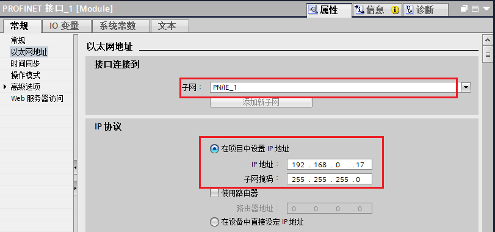
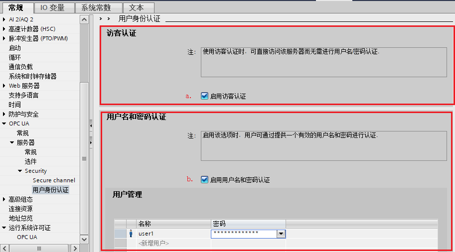
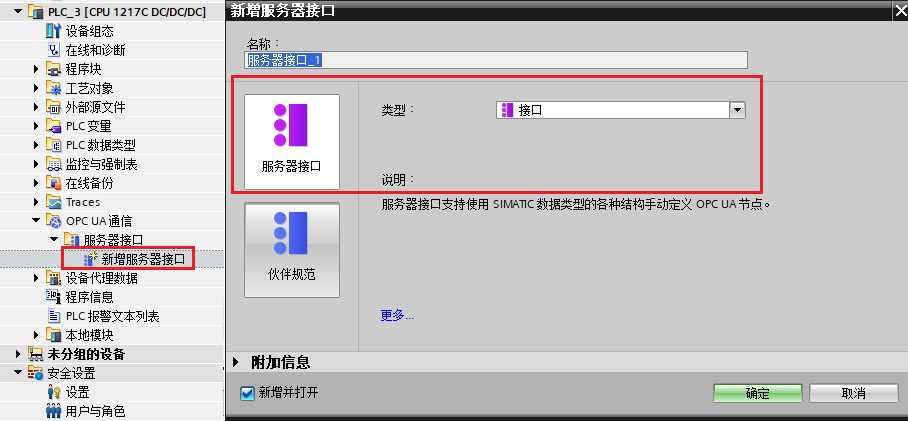
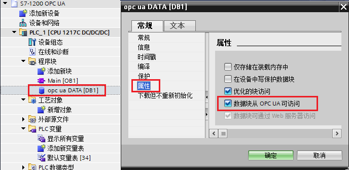
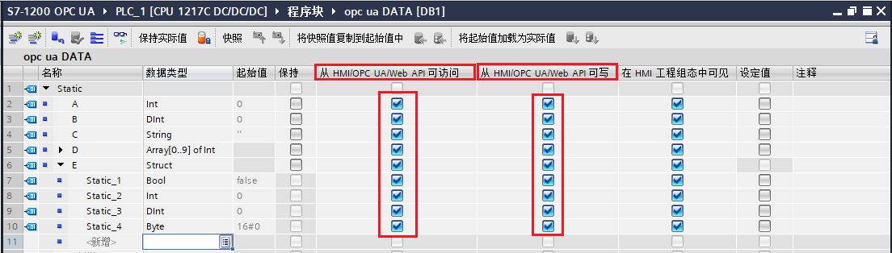

S7-1200 作为OPC UA 服务器，OPC SCOUT作为OPC UA客户端
S7-1200 CPU实现OPC UA 服务器的硬件和软件要求，如表1所示：
表1.S7-1200 CPU实现OPC UA 服务器的硬件和软件要求
| |
组件 |
版本 |
备注 |
| 硬件部分 |
S7-1200 各型号CPU |
V4.4版本及以上 |
V4.4版本的S7-1200仅支持作为OPC UA的服务器 |
| 软件部分 |
TIA Porta STEP 7 Basic/Professional |
V16及以上 |
TIA V16起才可以组态V4.4 版本的S7-1200CPU |
| OPC UA 许可证授权 |
SIMATIC OPC UA S7-1200 Basic |
6ES7823-0BA00-2BA0 |
纸质授权 S7-1200全系列CPU均使用该授权（一个PLC一个授权即可） |
| 测试客户端 |
SIMATIC NET V16 OPC Scout V10 |
OPC Scout V10 任意版本均可 |
可免费下载 |
一、激活S7-1200 OPC UA服务器并设置相关参数
1.创建PLC站点并设置IP地址
使用 TIA STEP7 V16 软件，创建S7-1200 CPU版本为V4.4的站点，如图1所示。
 -
-
图1.添加新设备
为CPU分配子网以及IP地址，如图2所示。
-
图2.设置子网以及IP
2. 启动OPC UA服务器
进入"设备视图"，选中CPU，CPU属性 →OPC UA →服务器，勾选"激活OPC UA服务器"，如图3所示。

图3.启动OPCUA服务器
a.激活OPC UA 服务器
b.服务器地址：用于客户端访问服务器，激活S7-1200的OPC UA服务器功能后，该OPC UA服务器的地址为图中的："opc:tcp://192.168.0.17:4840"，服务器地址格式为："opc:tcp://服务器IP：服务器端口号"
3. 设置服务器相关参数
CPU属性 →OPC UA →服务器 →选件 →常规 属性对话框内，可以设置端口号、最大会话超时时间，最大OPC UA会话数量等参数，如表2所示。
表2.S7-1200 OPC UA 选件设置
| OPC UA 选件 参数 |
备注 |

|
端口：设置服务器的端口号，默认4840，允许范围：1024-49151之间
最大会话超时时间：指定在不进行数据交换的情况下 OPC UA 服务器关闭会话之前的最大时长。默认30s，允许范围：1-600000s之间
最大OPC UA会话数量：OPC UA 服务器启动并同时操作的最大会话数。最大会话数取决于 CPU 的性能。截至到V4.5版本，S7-1200最大会话数是10个（V4.4版本为5个）。
|

|
服务器的订阅设置：
最短采样间隔：设置 OPC UA 服务器记录 CPU 变量值并与以前值相比较检查是否发生变更的时间间隔。
最短发布间隔：变量值发生改变时服务器通过新值向客户端发送消息的时间间隔。
已监视项的最大数量：指定该 CPU 的 OPC UA 服务器可同时监视值更改的最大元素数量。监视会占用资源。可监视元素的最大数量取决于所用的 CPU。 |
4. Secure channel设置
仅当 OPC UA 服务器可向 OPC UA 客户端证明身份时，才能建立服务器与客户端之间的安全连接。服务器证书可用于证实身份。
CPU属性 →OPC UA →服务器 →Security →Secure channel，在此对话框内可以设置服务器证书、服务器上可用的安全策略、以及可信客户端，如表3所示。
表3.S7-1200 Secure channel设置
| |
参数 |
备注 |
| 建立服务器证书 |
|
激活 OPC UA 服务器并确认安全提示后，STEP 7 会自动为服务器生成自签署证书，用户也可以生成由证书颁发机构签名的CA证书；
 注意！如何生成CA证书以及证书的管理请参考后续的常见问题。（新增、导出或删除证书）可在CPU的证书管理器中实现：CPU属性 防护与安全→证书管理器 注意！如何生成CA证书以及证书的管理请参考后续的常见问题。（新增、导出或删除证书）可在CPU的证书管理器中实现：CPU属性 防护与安全→证书管理器
|
| 设置服务器安全策略 |

|
调试初期可以考虑使用默认的"无安全设置"，一旦调试结束，建议只选择与您的设备或工厂的安全概念兼容的安全策略，如果可能，请使用"Basic256Sha256"设置，并禁用所有其它安全策略。 |
| 设置可信客户端 |

|
使用可信客户端列表，以仅允许对特定客户端进行访问。此项为可选操作，可以直接选择下载的"运行时自动接受所有客户端证书"
如果选择选项"运行时自动接受所有客户端证书"（位于"受信客户端" 列表下），则服务器会自动接受所有客户端证书。 |
5. 用户身份验证
CPU属性 →OPC UA →服务器 →Security →用户身份验证，此参数可设置 OPC UA 客户端中用户访问服务器时需通过的认证方式，如图4所示。

图4.用户身份认证
a. 启用访客认证：用户无需证明其身份（匿名访问）。OPC UA 服务器不会检查客户端用户的授权。
b. 启用用户名和密码认证：用户必须证明其身份（非匿名访问）。OPC UA 服务器将检查客户端用户是否具备访问服务器的权限。并通过用户名和正确的密码进行身份验证，在下方"用户管理" 表中输入用户，最多可添加 21 个用户。
注意！以上两个选项，建议仅在通信调试初期使用使用“启动访客认证”，调试结束后应启用"启用用户名和密码认证"，以确保通信安全。
6. 设置OPC UA 运行许可证
CPU属性 →运行系统许可证 →OPC UA →设置"购买的许可证类型"，S7-1200所有CPU所使用的许可证类型都是一种：SIMATIC OPC UA S7-1200 Basic，如图5所示。

图5.设置OPC UA 运行许可证
二、OPC UA服务器接口
标准的SIMATIC服务器接口不可用于S7-1200，必须使用"OPC UA 通信"中添加的服务器接口，通过这些服务器接口启用PLC变量后，方可对OPC UA客户端可见，具体见下文描述。
1. 新增服务器接口
项目树 PLC站点下，OPC UA 通信→服务器接口 →新增服务器接口，在弹出的"新增服务器接口"内选择"服务器接口"，如图6所示。

图6.新增服务器接口
2. 建立通信数据块，并设置相关属性
手动建立通信数据块"opc ua DATA",并确保该DB
块的属性"数据从OPC UA可访问"处于勾选状态，如图7所示。

图7.新建通信DB块并确认其属性
3. 建立通信变量，双击打开新建的DB块，并建立通信的变量，并根据需求勾选不同变量的OPC UA 读写访问属性，如图8所示。

图8.设置各变量的OPC UA读写访问属性
4. 将OPC UA 元素连接至OPC UA 服务器接口
双击图6中新增的服务器接口，（项目树 PLC站点下，OPC UA 通信→服务器接口 →服务器接口_1
),打开"OPC UA 服务器接口"对话框，将对话框右侧的OPC UA元素依次或者整体拖拽至左侧的服务器接口下方的空白行，如图9所示。

图9.将OPC UA 元素连接至OPC UA 服务器接口
使用OPC Scout V10测试与S7-1200的OPC UA通信
该文档使用SIMATIC NET自带OPC Client端软件OPC Scout V10客户端测试与S7-1200的OPC UA 通信，点击下方的下载连接，注册、下载SIMATIC NET V16并且安装成功。具体步骤参考量下文描述。
SIMATIC NET V16下载链接
OPC Scout V10测试步骤
1.添加OPC UA Server站点
点击左下角的"Start"→"All Programs"→"Siemens Automation"→"SIMATIC"→"SIMATIC NET"→"OPC Scout V10"(或者直接在Start里搜索 OPC Scout V10)，启动OPC Scout V10。如图10所示。

图10.启动OPC Scout V10
打开OPC Scout V10，在 Server explorer窗口，查找UA server→Add server，添加OPC UA 服务器，如图11所示。
图11.添加OPC UA 服务器
1.手动设置服务器URL：opc.tcp://192.168.0.17:4840
2. 点击“Discovery”，查找服务器
3. 在“Endpoints”处显示所查找到的服务器，
4. 点击查找到的服务器后，显示该服务器设置的安全策略，此处以“None”无安全策略为例。
5. 点击“Ok”，连接服务器
2.访问OPC UA Server数据
将正常连接的服务器一级一级展开后，找到对应的变量节点，然后将其拖拽至右下方“Data View 1”点击“Monitoring On”监视，如果需要写操作也可以直接在“New Value”处填写新值，然后点击“Write”按钮，即可执行写操作，如图12所示。
图12.访问OPC UA Server数据